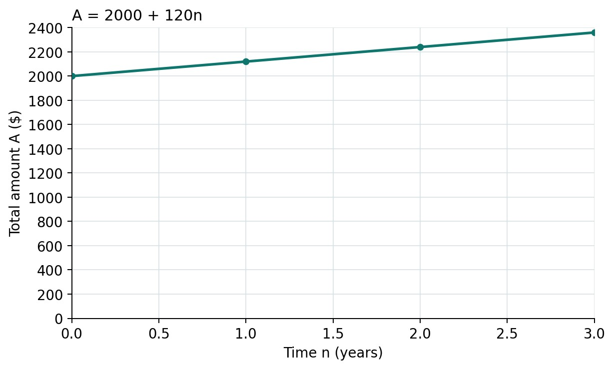
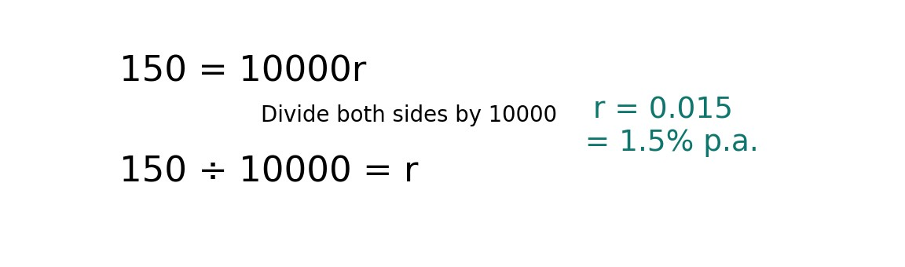

Lesson 5: Applying the Simple Interest Formula
Year level: Year 10 (middle ability set)Duration: 60 minutesFocal concept/topic: Missing rate and time; substitution, inverse operations and a first amount graph | |
Lesson aim: Use I = Prn when rate or time is unknown, verify a result by substitution, and represent one familiar simple-interest amount rule in a table and graph. Finding principal is a supported extension. | |
Learning intention: We are learning to solve simple-interest problems with an unknown rate or time, check our answers, and show a saving rule in a table and graph. Success criteria: □ I can substitute the known values and use inverse operations to find r or n. | |
Syllabus outcomes and content: NSW Mathematics K–10 Syllabus (NESA, 2022a).
| Working Mathematically indicators: Teacher-written indicators, linked to activities:
|
ICT:
| LIT:
|
Prerequisite knowledge:
| Resources:
|
Before the lesson:
| |
Labels used in this plan: WM Working Mathematically LIT Literacy ICT Technology AfL Assessment for learning AoL Assessment of learning
Key teacher question → Expected: suggested student response. Self-designed WM indicators are in italics.
Teaching sequence
| Steps & timing | Teaching & learning activities |
|---|---|
| ORIENTATION0–6 minRetrieve and check algebra readiness |
Teacher
Students
Check / support R2 separates a difficulty with inverse operations from a difficulty with the financial vocabulary. Provide a multiplication-to-division example for students who need it. |
| ENHANCING6–16 minMissing rate: substitute first |
Teacher
Model / board working
Students
Check / support If students report 0.015%, ask them to multiply the decimal by 100 and check the interest produced by their stated rate. |
| ENHANCING16–26 minMissing time: divide by annual interest |
Teacher
Model / board working
Students
Check / support Keep “interest required ÷ interest per year = years” visible for students who need an arithmetic bridge to the equation. |
| ENHANCING26–38 minYou do, check and interpret |
Teacher
Students
Check / support Use U for inverse-operation errors, R for decimal/percentage confusion, T for units and A for using A as I. Finding principal is extension evidence and is not required for the core success judgement today. |
| ENHANCING38–54 minFirst amount graph: formula to table to points |
Teacher
Model / board working
Students
Check / support Provide the same prelabelled grid plus the first point for students who need it. If coordinates are reversed, have the student read “time first, amount second” before plotting the next point. |
| SYNTHESIZING54–60 minReview and exit ticket |
Teacher
Students
Check / support Read X1 working and X2 language separately. Use the result to decide whether Lesson 6 starts with an algebra correction or a graph-label correction. After the lesson
|
Worked solutions
| Task / question | Worked solution |
|---|---|
| R1–R2 | R1: n = 18/12 = 1.5; I = 500 × 0.06 × 1.5 = $45; A = $545. R2: x = 80/20 = 4; check 20 × 4 = 80. |
| M1 | 150 = 5000 × r × 2 = 10000r. r = 150/10000 = 0.015 = 1.5% p.a. Check: 5000 × 0.015 × 2 = $150. |
| W1 | 72 = 1200 × r × 2 = 2400r. r = 72/2400 = 0.03 = 3% p.a. Check: 1200 × 0.03 × 2 = $72. |
| M2 | 180 = 1200 × 0.05 × n = 60n. n = 180/60 = 3 years. Check: 1200 × 0.05 × 3 = $180. |
| W2 | 60 = 800 × 0.05 × n = 40n. n = 60/40 = 1.5 years = 18 months. Check: 800 × 0.05 × 1.5 = $60. |
| Y1 | 180 = 2000 × r × 3 = 6000r. r = 180/6000 = 0.03 = 3% p.a. Check: 2000 × 0.03 × 3 = $180. |
| Y2 | 150 = 1500 × 0.04 × n = 60n. n = 150/60 = 2.5 years = 30 months. Check: 1500 × 0.04 × 2.5 = $150. |
| E1 | n = 18/12 = 1.5. 216 = P × 0.06 × 1.5 = 0.09P. P = 216/0.09 = $2400. Check: 2400 × 0.06 × 1.5 = $216. |
| E2 | I = 2240 − 2000 = $240. 240 = 2000 × r × 2 = 4000r. r = 240/4000 = 0.06 = 6% p.a. Check A = 2000 + 2000 × 0.06 × 2 = $2240. |
| G1–G2 | Pr = 2000 × 0.06 = $120/year. I = 120n; A = 2000 + 120n. Table and points: (0, 2000), (1, 2120), (2, 2240), (3, 2360). G2: at 2 years A = $2240. The increase is always $120 per year, so the points lie on a straight line. The amount begins at $2000, not $0. |
| Exit X1–X2 | X1: 80 = 1000 × r × 2 = 2000r; r = 80/2000 = 0.04 = 4% p.a. X2: A = $2000 at n = 0; the amount increases by $120 per extra year. |
Worked solutions — G1 amount graph

G1: (0, 2000), (1, 2120), (2, 2240), (3, 2360). The initial principal is $2000 and the amount increases by $120 for each extra year.
Adjustments and anticipated misconceptions
| Anticipated misconception | Why students may think this | How this lesson addresses it |
|---|---|---|
| r = 0.015 is reported as 0.015%. | Decimal rate and percentage notation may be confused. | Convert r × 100 to a percentage, then test the stated rate in the original equation. |
| The unknown is found by multiplying instead of dividing. | Students may recall the direct formula without interpreting the substituted equation. | Keep 150 = 10000r beside a one-step equation. State the inverse operation and show it on both sides. |
| A is substituted as I in E2. | The larger given amount may look like the required formula input. | Read what was earned, then write I = A − P before solving for r. |
| The graph begins at (0, 0), or coordinates are reversed. | Students may transfer the origin of an interest graph to an amount graph or ignore labels. | Read time first and amount second. Model (0, 2000) and connect it to the original principal. |
Adjustments
| Students who need… | Adjustment |
|---|---|
| More support | Provide P/r/n boxes, the units card and completion equations such as 72 = 2400r. Offer r = I/(Pn) and n = I/(Pr) on the reference card, but still ask which known quantities belong in the denominator. Give the graph with the first point shown. |
| More challenge | Use E1 to find principal and E2 to find interest from total amount before solving. Require back-substitution and an explanation of units. These remain within simple-interest mathematics. |
| Language / EAL/D | Read the question aloud, distinguish earns from ends with, and rehearse “I divide both sides by … because …”. Pair each symbol with its meaning and unit (NESA, 2022b). |
| Access and participation | Provide a large prelabelled grid, ruler and printed model. Students may explain a check orally. If fine-motor plotting is difficult, students identify coordinates and annotate a supplied graph. |
Vocabulary
| Term | Definition | Image |
|---|---|---|
| Unknown quantity | A value not yet given, such as r or n. | Inverse-operation example / amount graph below |
| Substitute | Replace a symbol with its known value, using compatible units. | Inverse-operation example / amount graph below |
| Inverse operation | An operation that undoes another. Division undoes multiplication. | Inverse-operation example / amount graph below |
| Verify | Substitute the solution into the original rule to check it gives the stated interest. | Inverse-operation example / amount graph below |
| Coordinate (n, A) | An ordered pair giving time first and total amount second. | Inverse-operation example / amount graph below |
| Linear relationship | A relationship with a constant change in amount for equal changes in time. Its graph is a straight line. | Inverse-operation example / amount graph below |

Vocabulary — coordinates and linear growth
A coordinate gives time first and total amount second. Equal time intervals have equal amount increases, so these points lie on a straight line. Visual: prepared for these lessons. It connects the words to quantities, units or a mathematical operation.
Sources acknowledged in this lesson
M1 is adapted from Palmer et al. (2024), Example 18(b), p. 42. The remaining tasks, grid, reference card and diagrams are prepared for this sequence. The printed graph carries forward into Lesson 6.
- Ainsworth, S. (2006). DeFT: A conceptual framework for considering learning with multiple representations. Learning and Instruction, 16(3), 183–198. https://doi.org/10.1016/j.learninstruc.2006.03.001
- Centre for Education Statistics and Evaluation. (2018). Cognitive load theory in practice: Examples for the classroom. NSW Department of Education. https://education.nsw.gov.au/about-us/education-data-and-research/cese/publications/practical-guides-for-educators/cognitive-load-theory-in-practice.html
- NSW Department of Education. (n.d.). Newman's error analysis. Digital Learning Selector. https://app.education.nsw.gov.au/digital-learning-selector/LearningActivity/Card/650
- NSW Education Standards Authority. (2022a). Mathematics K–10 syllabus. https://curriculum.nsw.edu.au/learning-areas/mathematics/mathematics-k-10-2022/content/stage-5/facb3aa952
- NSW Education Standards Authority. (2022b). Vocabulary and language in Mathematics 7–10 [Support material]. https://curriculum.nsw.edu.au/file/0e513738-cc88-4ff1-9984-ef0b842faf18/mathematics-7-10-supporting-language-and-vocabulary.docx
- Palmer, S., McDaid, K., Greenwood, D., Woolley, S., Goodman, J., & Vaughan, J. (2024). CambridgeMATHS NSW Stage 5 – Core and Standard Paths Year 10 (3rd ed.). Cambridge University Press & Assessment.
- Rosenshine, B. (2012). Principles of instruction: Research-based strategies that all teachers should know. American Educator, 36(1), 12–19, 39. https://www.aft.org/ae/spring2012/rosenshine